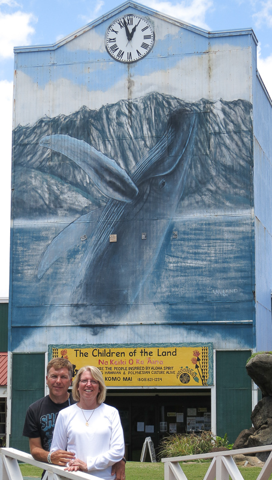
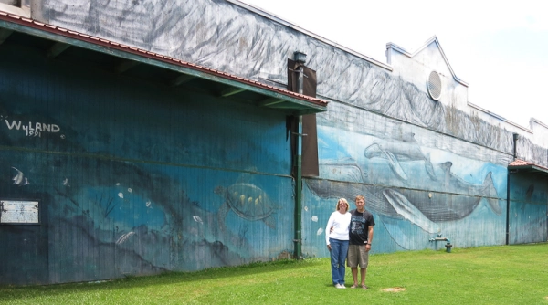

In Search of Wyland Walls


We have been to Kaua’i once before but Alex was 7 then and it was long before we were searching for Wyland walls. For his graduation from USC we wanted to take him and Kristie somewhere and given how much he has always liked Hawaii it seemed like a great place to go. It seemed natural to make sure we saw the wall here on this trip but in planning I ran into some trouble.
It was very easy to figure out where “Humpbacks off the Pali Coast_“_ was from the my online research and from Google streetview I was able to find it easily. It worked out even better that it is right across the street from our hotel.
When searching for info on “A Time for Conservation_“_ the information was much more confusing. There was a 50% chance it was in the same place as “Humpbacks off the Pali Coast” but there was a significant chance it was elsewhere and if so, I was not sure where.
In the end it was right where I hoped it was and within an hour of getting here we had seen both walls. A great start to the trip.
Kauai, Hawaii
150 Feet Long x 24 Feet High
Dedicated January 8th, 1991
Excerpt from @wylandfoundation on Instagram
After completing the clock mural in Kapaa, Kauai, Wyland painted a companion mural nearby. The painting depicts the long, rugged Na Pali coast and offers a view of the shore from above and below the ocean. Featured in the mural are a life-size green sea turtle and Wyland’s first Hawaiian monk seal, which is indigenous to the waters off Kauai.
“The monk seal is very endangered, and I wanted to bring some attention to this incredible native of the islands,” says Wyland. “The mural seems to blend into the natural environment as the clouds drift across the sky and into the painting, becoming one with the land.”